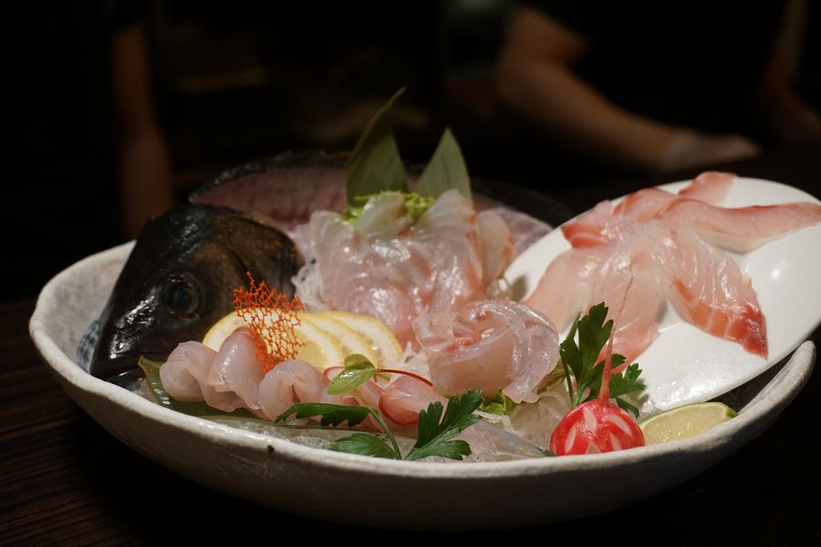
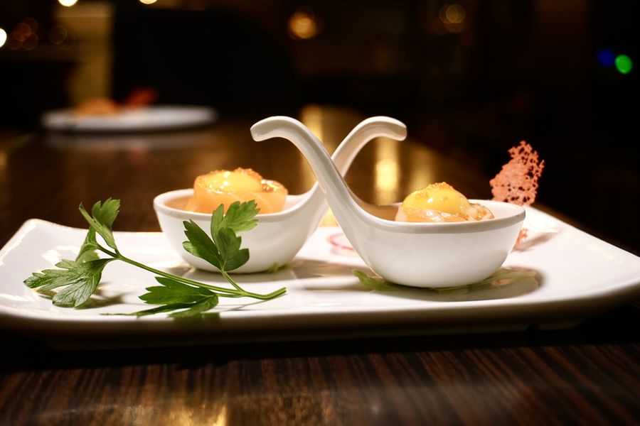
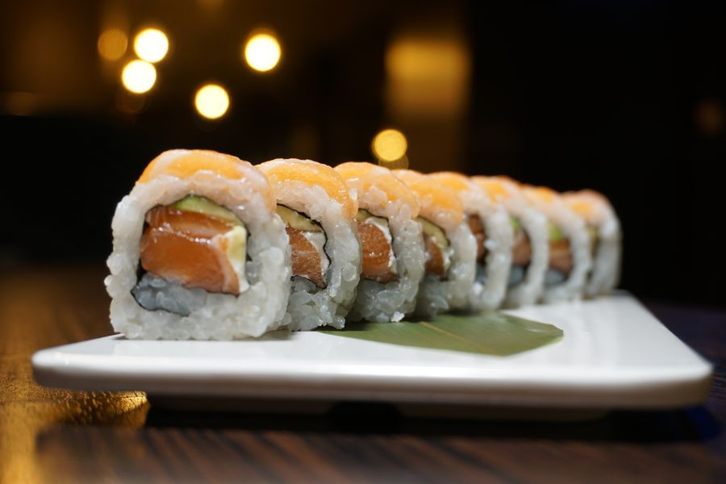
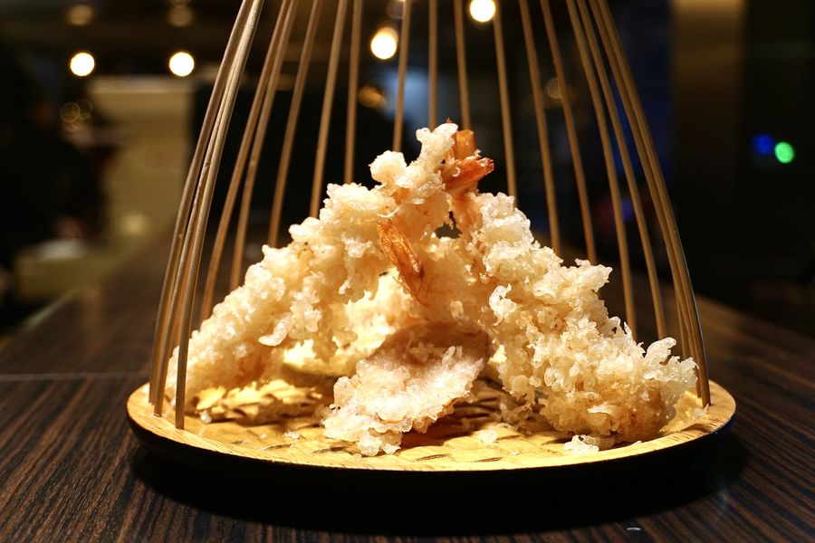

Vimercate · Piazzale Marconi 12 · 12:00 → 02:00
SUSHI FINO A TARDI
Quando gli altri chiudono, il nostro banco accende le insegne. Prendi un biglietto al distributore, siediti, il pesce arriva.

券売機 · Il distributore
Premi. Si accende.
Poi arriva.
Come nei ramen bar di Tokyo: si compra il biglietto alla macchina e si consegna al banco. Foto vere dei nostri piatti.
深夜 · Fino a tardi
Aperti quando
hai davvero fame.
Pranzo veloce: sushi mix e box da portare via.
Il banco pieno. Dopo mezzanotte solo nigiri, sashimi e ramen.
Chiusi. Il pesce riposa, anche noi.
路地 · Il vicolo
Otto sgabelli,
un neon sopra la porta.
Non c’è insegna sulla piazza: c’è una freccia al neon che dice 2F. Su per le scale, un banco di legno scuro, il tonno che viene tagliato sotto una lampada sola. Fino alle due.
SUSHI · SAKE · BIRRA ALLA SPINA · RAMEN DOPO MEZZANOTTE



場所 · Dove
Piazzale Marconi 12
Vimercate · 2F
- Mar–Dom
- 12:00–15:00 · 18:00–02:00
- Telefono
- +39 392 416 6908
- Ordina e ritira